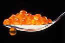
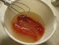

Несколько кулинарных рецептов с икрой

Рецепты блюд из икры

Рыбья икра - это, пожалуй, самое вкусное, что есть в рыбе. Причем из икры практически любой рыбы можно приготовить деликатес, а щучья икра по вкусу может соперничать даже с красной икрой. Щучью икру в старые времена назвали купеческой. На дворе весна, а значит, у рыболова на кухне имеет шанс оказаться рыбья икра, разумеется, добытая законным способом. Что же можно вкусненького из нее приготовить…
Соление икры на водоеме Приготовить икру на природе не сложнее, чем в домашних условиях, но зато сколько удовольствия! А самое главное такой вкусной может быть только свежая икра. Процесс приготовления занимает примерно 20-30 минут.
Предварительно надрезав пленку у икряных мешков, укладываем икру в посуду (лучше глубокую тарелку) и заливаем горячим (не кипящим!) соляным раствором. Далее мешаем вилкой, или веточкой с сучками, и собираем на эти сучки пленку. Соскребать икру ножом с пленки не рекомендуется, поскольку треть, а в неумелых руках и половина икры лопается и приходит в негодность.
Пока вы вымешиваете, икра набухает, впитывает соляной раствор и к концу процесса он становится той самой консистенции, когда мягко тает на языке. Кушать такую икру можно не только в виде бутербродов, но и просто столовыми ложками. Впечатляет? Учтите, что такая икра долго не хранится. Хотя предупреждение конечно глупое - как может такая вкуснятина долго хранится…
Соление икры в домашних условиях Ничто не мешает приготовить нам икру по тому же рецепту (см. выше) и дома. Но все же есть нюансы. Дома можно сделать икру для долгого хранения, скажем, на Новый год и даже дольше.
Начнем с того, что в домашних условиях не обязательно убирать пленку вилкой или веточкой. Вываливаем икру в посуду, заливаем чуть остывшим кипятком. Если икра пахнет тиной, то при обработке горячей водой улетучивается тинный запах. Кроме этого икринки становятся более водянистыми и при поедании (особенно это заметно у крупной икры) икринки лопаются между зубами и выплескивается вкуснейший соленый сок.
Далее берем миксер с венчиком и хорошенько взбиваем. Вся плёнка останется на венчике миксера, при этом икра остается целой. Промываем икру под холодной водой и удаляем мелкие пленки, которые понимаются к поверхности воды. Промывать нужно очень хорошо, я промываю минимум 10-15 раз.

Сливаем воду и видим - икра стала похожа на пшено и цветом и размером. Откидываем икру на марлю, подвешиваем и даем стечь воде. Спустя 15-20 минут пересыпаем икру в миску и солим мелкой солью (не йодированной) по вкусу. Самой вкусной получается малосольная икра, но и хранить ее долго нельзя.
Поэтому я разделяю икру для долгого хранения и для ближайшей трапезы, и солю каждую порцию по-разному. Посолив, хорошо перемешиваем икру ложкой. Из цвета пшенки икра превращается в янтарный прозрачный продукт с небольшой пенкой сверху. Ставим икру в холодильник на 5-6 часов, после чего ее можно смело кушать.
Это классический рецепт, но и в нем всегда есть место для фантазирования. Так, например, многие не просто солят икру, но и добавляют черный перец и даже немного сахара. Второй вариант: после того как икра засолилась, можно добавить в нужное количество икры сливочное масло (растительное), нарубленный укроп и перемешать на миксере. После этого остается намазать этот икряной фарш на кусочек поджаренного хлебца и вкушать смакуя.
Есть и еще одна хитрость. Если вы хотите отведать и приготовить самостоятельно настоящую красную икру, то покупайте непотрошеную горбушу, хотя и в таком виде она встречается не часто. В одной из нескольких горбуш, как правило, встречается икра.
Причем количество икры в ней будет сопоставимо с объемом купленной в магазине средних размеров баночки весом 200-250 гр.. Таким образом, вы не только приобретете рыбу, но еще и останетесь с очень приличным бонусом, который будет по стоимости едва ли не дороже купленной рыбы.
Икряница Ингредиенты: икра любой речной рыбы - 250 гр., яйцо - 1шт., молоко 100 гр., соль, перец по вкусу.
Это блюдо из детства, его готовила моя бабушка. Простое, вкусное и очень сытное. Очищенную от пленки икру смешиваем с небольшим количеством молока, добавляем туда же одно яйцо и солим. Выливаем получившуюся смесь в разогретую сковороду с разогретым растительным маслом и жарим (можно с двух сторон). Приготовленное таким образом блюдо настолько питательное, что им можно кормиться весь день.
Икорные блинчики Ингредиенты: икра любой речной рыбы - 250гр., яйцо - 1шт., луковица средняя -1шт., морковь средняя - 1шт., мука-1-2 ст.л., соль, перец по вкусу.
Морковь и лук потереть на мелкой терке. Все смешать с икрой, яйцом, специями и мукой. Муки нужно совсем немного, иначе блинчики получатся жесткими. Выкладываем ложкой полученную массу на разогретую сковороду с маслом и обжариваем с двух сторон до готовности.
Запеканка из икры с хлебом Ингредиенты: свежая икра - 300-400гр., молоко - 100 мл., репчатый лук - 100гр., - пшеничный хлеб - 100гр., жир - 20гр., соль - по вкусу, зелень - по вкусу.
Икру и замоченный в молоке пшеничный хлеб пропускаем через мясорубку или сбиваем миксером, добавляем мелко нарубленный репчатый лук, соль, перец, укладываем ровным слоем на жарочный лист, смазанный жиром, и запекаем в духовке до румяной корочки.
По готовности остается нарезать запеканку на порции и посыпать мелкорубленой зеленью.
Икра запеченная в духовке Ингредиенты: 300 гр. рыбной икры, 0,5 кг фасоли, 2/3 стакана молока, 2 ст. ложки сметаны, 2 ст. ложки растопленного сливочного масла, 1/2 пучка зелени укропа, 1/3 ч. ложки эстрагона, соль по вкусу.
Фасоль залить на ночь холодной кипяченой водой, после чего варить на слабом огне, пока она не станет мягкой. Готовую фасоль откинуть на дуршлаг, чтобы стекла жидкость, а затем пропустить через мясорубку или сбить на миксере вместе с икрой.
В полученную массу влить кипяченое охлажденное молоко, добавить эстрагон и соль и все тщательно вымешать. Форму смазать жиром, выложить в нее эту массу, смазать сверху сметаной и поставить в разогретый духовой шкаф.
Запекать на среднем огне до полной готовности. Готовую запеканку подавать к столу горячей, посыпав измельченной зеленью укропа.